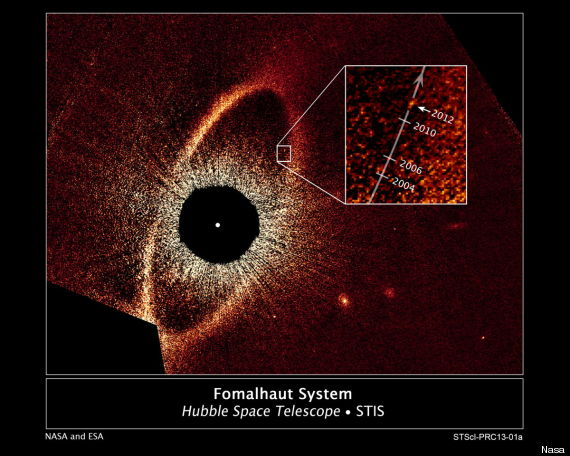
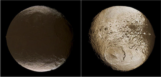
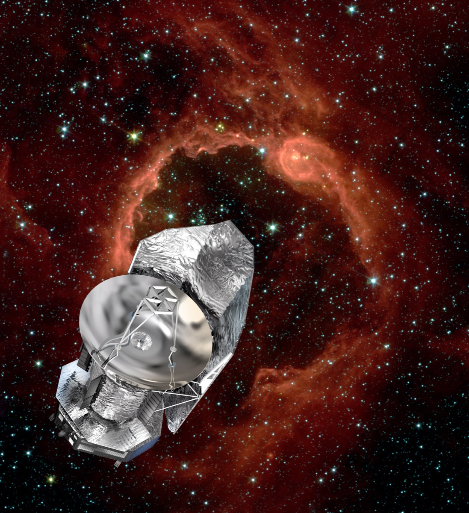
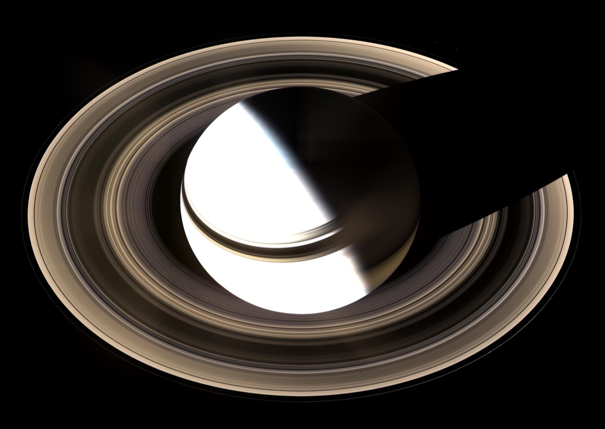
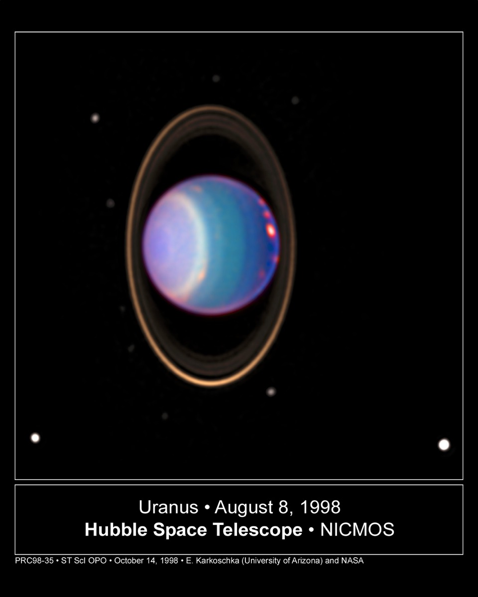

Research

Are the gaps in this disk carved by planets?
Find out more!

The extreme orbit of Fomalhaut b
An interesting extension of my work is the case of the directly imaged exoplanet candidate Fomalhaut b. The fact that infrared surveys
have not been able to detect it implies that what's seen in optical Hubble images is scattering off a vast dust cloud. Kennedy and
Wyatt (2011) suggested that this dust could be due to a swam of colliding irregular satellites! Recently, Kalas et al. (2013) announced
that new epochs of observation show the object to be on an extremely eccentric orbit (e ~ 0.8). This would have dramatic effects
on the observed circumstellar debris disk (the big ellipse in the picture), but it appears calm and confined. I find this sets
stringent limits on the time Fomalhaut b can have been on its present orbit (as a function of how massive it is). I also find that
if Fomalhaut b is a giant planet and is the only object dynamically interacting with the disk, then we are catching the disk on its way
to becoming extremely eccentric in the next few Myr. This will bring all the material into the inner Fomalhaut system, perhaps
analogously to the hypothesized Late Heavy Bombardment in the Solar System (Tamayo 2014b).

Irregular satellites
In graduate school, I mainly focused on giant debris clouds collisionally generated by irregular
satellites of giant planets. The irregular satellites are thought to be remnants of the planet formation era that were gravitationally captured by their
current hosts. As a result they are on mutually inclined, crossing orbits and have been crashing violently into each other for the past 4.5 billion
years. Bottke et al. (2010) argue that this population is the most collisionally evolved in the Solar System. I have been doing observational work
to detect and characterize this debris, as well as theoretical work to determine the grain's eventual fate.

The Mystery of Two-Faced Iapetus
Iapetus is a perplexing moon in the Saturn system. It had long been thought that dark dust from the outer satellites evolving inward through
radiation forces might explain Iapetus' odd surface pattern (Soter 1974), but we performed the first full analysis incorporating all the important
perturbations acting on this dust to calculate the probability of impact with Iapetus and the expected surface distribution (Tamayo et al. 2011).
We found that almost all particle sizes will strike Iapetus, and that the expected distribution matches well the one observed. It turns out that Iapetus
is an exception among the inner moons of the giant planets because due its extraordinarily slow rotation rate, runaway sublimation of water ice powerfully
sharpens the initial dust deposition pattern and brightens the poles (Spencer & Denk 2010).

Finding the Largest Rings in the Solar System with the Herschel Space Observatory
I was the P.I. on OT1 and OT2 proposals with the Herschel Space Observatory trying to probe the Phoebe ring at Saturn at new wavelengths
to probe the particle properties, and searching for analogous rings in the Uranus and Neptune systems. Unfortunately, despite much
effort, we were only able to set upper limits due to scattered light from the planet.

Catching the Phoebe Ring in Saturn's Shadow with the Cassini Spacecraft
One would think that it would be easy to detect the Phoebe ring at Saturn using the Cassini spacecraft in orbit about the planet.
The problem is that the ring is so vast, and the spacecraft so close, that the ring covers the entire field of view and provides
a constant background that's extremely difficult to separate out. We therefore exploited images capturing the shadow cast by Saturn and
its rings in a single field, and indirectly measured the amount of light scattered by dust grains by measuring the emission that was
absent in the shadowed region. This was hard! We had to do careful statistics. Try to imagine that we are trying to see a disk that has
about 10 particles the width of your hair in size per cubic kilometer! Our measurements allowed us to constrain the dust grain albedos
(Tamayo et al. 2014a).

Uranus' extreme axial tilt creates chaotic orbits
In trying to undertake a similar analysis to our work on the Saturnian system, we found that dust particle orbits around Uranus became chaotic and
underwent large-amplitude eccentricity oscillations that brought them in very close to the planet and its inner moons. It turns out this instability
is the result of Uranus' extreme axial tilt and the interaction of the planet's oblateness with gravitational perturbations from the Sun.
The dynamics of particles in high-obliquity systems was studied by Tremaine et al. (2009). We rederived their result in a new way, and incorporated the
effects of radiation pressure, which is important for dust grains (Tamayo et al. 2013a). We then applied it to the Uranian system, finding it might explain
the color dichotomies observed by Buratti & Mosher (1991) on the outermost four of the inner Uranian moons (Tamayo et al. 2013b).